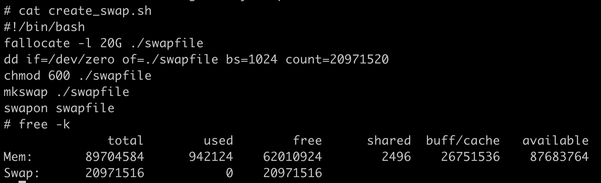
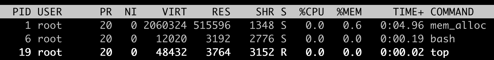
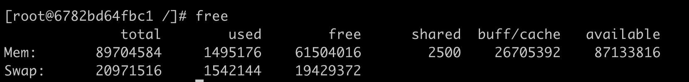
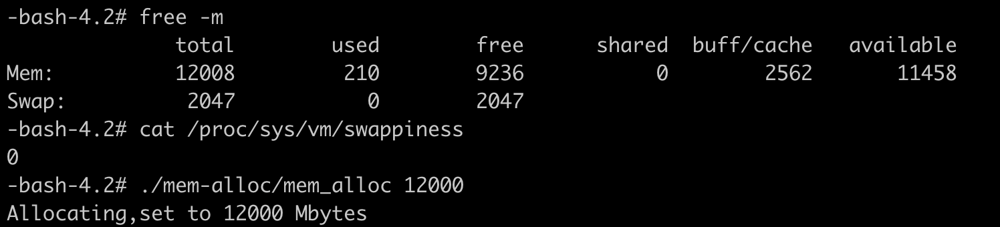
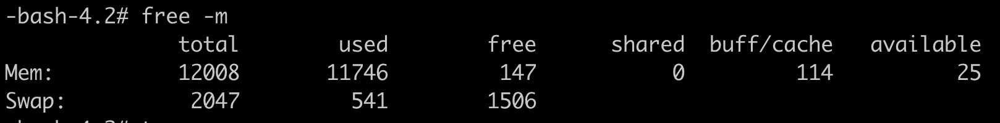
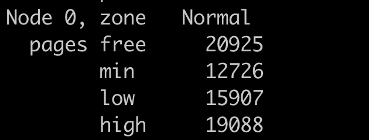
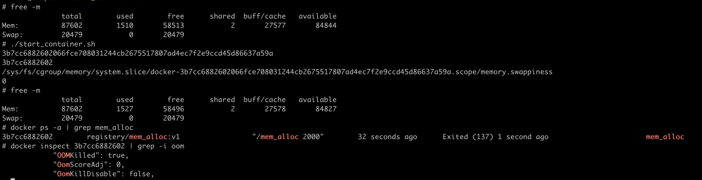

- 00 开篇词 一个态度两个步骤，成为容器实战高手.md.html
- 01 认识容器：容器的基本操作和实现原理.md.html
- 02 理解进程（1）：为什么我在容器中不能kill 1号进程？.md.html
- 03 理解进程（2）：为什么我的容器里有这么多僵尸进程？.md.html
- 04 理解进程（3）：为什么我在容器中的进程被强制杀死了？.md.html
- 05 容器CPU（1）：怎么限制容器的CPU使用？.md.html
- 06 容器CPU（2）：如何正确地拿到容器CPU的开销？.md.html
- 07 Load Average：加了CPU Cgroup限制，为什么我的容器还是很慢？.md.html
- 08 容器内存：我的容器为什么被杀了？.md.html
- 09 Page Cache：为什么我的容器内存使用量总是在临界点.md.html
- 10 Swap：容器可以使用Swap空间吗？.md.html
- 11 容器文件系统：我在容器中读写文件怎么变慢了？.md.html
- 12 容器文件Quota：容器为什么把宿主机的磁盘写满了？.md.html
- 13 容器磁盘限速：我的容器里磁盘读写为什么不稳定_.md.html
- 14 容器中的内存与IO：容器写文件的延时为什么波动很大？.md.html
- 15 容器网络：我修改了_proc_sys_net下的参数，为什么在容器中不起效？.md.html
- 16 容器网络配置（1）：容器网络不通了要怎么调试.md.html
- 17 容器网络配置（2）：容器网络延时要比宿主机上的高吗.md.html
- 18 容器网络配置（3）：容器中的网络乱序包怎么这么高？.md.html
- 19 容器安全（1）：我的容器真的需要privileged权限吗.md.html
- 20 容器安全（2）：在容器中，我不以root用户来运行程序可以吗？.md.html
- 加餐01 案例分析：怎么解决海量IPVS规则带来的网络延时抖动问题？.md.html
- 加餐02 理解perf：怎么用perf聚焦热点函数？.md.html
- 加餐03 理解ftrace（1）：怎么应用ftrace查看长延时内核函数？.md.html
- 加餐04 理解ftrace（2）：怎么理解ftrace背后的技术tracepoint和kprobe？.md.html
- 加餐05 eBPF：怎么更加深入地查看内核中的函数？.md.html
- 加餐06 BCC：入门eBPF的前端工具.md.html
- 结束语 跳出舒适区，突破思考的惰性.md.html
- 捐赠
10 Swap：容器可以使用Swap空间吗？
你好，我是程远。这一讲，我们来看看容器中是否可以使用Swap空间。
用过Linux的同学应该都很熟悉Swap空间了，简单来说它就是就是一块磁盘空间。
当内存写满的时候，就可以把内存中不常用的数据暂时写到这个Swap空间上。这样一来，内存空间就可以释放出来，用来满足新的内存申请的需求。
它的好处是可以应对一些瞬时突发的内存增大需求，不至于因为内存一时不够而触发OOM Killer，导致进程被杀死。
那么对于一个容器，特别是容器被设置了Memory Cgroup之后，它还可以使用Swap空间吗？会不会出现什么问题呢？
问题再现
接下来，我们就结合一个小例子，一起来看看吧。
首先，我们在一个有Swap空间的节点上启动一个容器，设置好它的Memory Cgroup的限制，一起来看看接下来会发生什么。
如果你的节点上没有Swap分区，也没有关系，你可以用下面的这组命令来新建一个。
这个例子里，Swap空间的大小是20G，你可以根据自己磁盘空闲空间来决定这个Swap的大小。执行完这组命令之后，我们来运行free命令，就可以看到Swap空间有20G。
输出的结果你可以参考下面的截图。

然后我们再启动一个容器，和OOM那一讲里的例子差不多，容器的Memory Cgroup限制为512MB，容器中的mem_alloc程序去申请2GB内存。
你会发现，这次和上次OOM那一讲里的情况不一样了，并没有发生OOM导致容器退出的情况，容器运行得好好的。
从下面的图中，我们可以看到，mem_alloc进程的RSS内存一直在512MB（RES: 515596）左右。
 那我们再看一下Swap空间，使用了1.5GB (used 1542144KB)。输出的结果如下图，简单计算一下，1.5GB + 512MB，结果正好是mem_alloc这个程序申请的2GB内存。

通过刚刚的例子，你也许会这么想，因为有了Swap空间，本来会被OOM Kill的容器，可以好好地运行了。初看这样似乎也挺好的，不过你仔细想想，这样一来，Memory Cgroup对内存的限制不就失去了作用么？
我们再进一步分析，如果一个容器中的程序发生了内存泄漏（Memory leak），那么本来Memory Cgroup可以及时杀死这个进程，让它不影响整个节点中的其他应用程序。结果现在这个内存泄漏的进程没被杀死，还会不断地读写Swap磁盘，反而影响了整个节点的性能。
你看，这样一分析，对于运行容器的节点，你是不是又觉得应该禁止使用Swap了呢?
我想提醒你，不能一刀切地下结论，我们总是说，具体情况要具体分析，我们落地到具体的场景里，就会发现情况又没有原先我们想得那么简单。
比如说，某一类程序就是需要Swap空间，才能防止因为偶尔的内存突然增加而被OOM Killer杀死。因为这类程序重新启动的初始化时间会很长，这样程序重启的代价就很大了，也就是说，打开Swap对这类程序是有意义的。
这一类程序一旦放到容器中运行，就意味着它会和“别的容器”在同一个宿主机上共同运行，那如果这个“别的容器” 如果不需要Swap，而是希望Memory Cgroup的严格内存限制。
这样一来，在这一个宿主机上的两个容器就会有冲突了，我们应该怎么解决这个问题呢？要解决这个问题，我们先来看看Linux里的Swappiness这个概念，后面它可以帮到我们。
如何正确理解swappiness参数？
在普通Linux系统上，如果你使用过Swap空间，那么你可能配置过proc文件系统下的swappiness 这个参数 (/proc/sys/vm/swappiness)。swappiness的定义在Linux 内核文档中可以找到，就是下面这段话。
swappiness
This control is used to define how aggressive the kernel will swap memory pages. Higher values will increase aggressiveness, lower values decrease the amount of swap. A value of 0 instructs the kernel not to initiate swap until the amount of free and file-backed pages is less than the high water mark in a zone.
The default value is 60.
前面两句话大致翻译过来，意思就是 swappiness可以决定系统将会有多频繁地使用交换分区。
一个较高的值会使得内核更频繁地使用交换分区，而一个较低的取值，则代表着内核会尽量避免使用交换分区。swappiness的取值范围是0–100，缺省值60。
我第一次读到这个定义，再知道了这个取值范围后，我觉得这是一个百分比值，也就是定义了使用Swap空间的频率。
当这个值是100的时候，哪怕还有空闲内存，也会去做内存交换，尽量把内存数据写入到Swap空间里；值是0的时候，基本上就不做内存交换了，也就不写Swap空间了。
后来再回顾的时候，我发现这个想法不能说是完全错的，但是想得简单了些。那这段swappiness的定义，应该怎么正确地理解呢？
你还记得，我们在上一讲里说过的两种内存类型Page Cache 和RSS么?
在有磁盘文件访问的时候，Linux会尽量把系统的空闲内存用作Page Cache来提高文件的读写性能。在没有打开Swap空间的情况下，一旦内存不够，这种情况下就只能把Page Cache释放了，而RSS内存是不能释放的。
在RSS里的内存，大部分都是没有对应磁盘文件的内存，比如用malloc()申请得到的内存，这种内存也被称为匿名内存（Anonymous memory）。那么当Swap空间打开后，可以写入Swap空间的，就是这些匿名内存。
所以在Swap空间打开的时候，问题也就来了，在内存紧张的时候，Linux系统怎么决定是先释放Page Cache，还是先把匿名内存释放并写入到Swap空间里呢？
我们一起来分析分析，都可能发生怎样的情况。最可能发生的是下面两种情况：
第一种情况是，如果系统先把Page Cache都释放了，那么一旦节点里有频繁的文件读写操作，系统的性能就会下降。
还有另一种情况，如果Linux系统先把匿名内存都释放并写入到Swap，那么一旦这些被释放的匿名内存马上需要使用，又需要从Swap空间读回到内存中，这样又会让Swap（其实也是磁盘）的读写频繁，导致系统性能下降。
显然，我们在释放内存的时候，需要平衡Page Cache的释放和匿名内存的释放，而swappiness，就是用来定义这个平衡的参数。
那么swappiness具体是怎么来控制这个平衡的？我们看一下在Linux内核代码里是怎么用这个swappiness参数。
我们前面说了swappiness的这个值的范围是0到100，但是请你一定要注意，它不是一个百分比，更像是一个权重。它是用来定义Page Cache内存和匿名内存的释放的一个比例。
我结合下面的这段代码具体给你讲一讲。
我们可以看到，这个比例是anon_prio: file_prio，这里anon_prio的值就等于swappiness。下面我们分三个情况做讨论：
第一种情况，当swappiness的值是100的时候，匿名内存和Page Cache内存的释放比例就是100: 100，也就是等比例释放了。
第二种情况，就是swappiness缺省值是60的时候，匿名内存和Page Cache内存的释放比例就是60 : 140，Page Cache内存的释放要优先于匿名内存。
/*
* With swappiness at 100, anonymous and file have the same priority.
* This scanning priority is essentially the inverse of IO cost.
*/
anon_prio = swappiness;
file_prio = 200 - anon_prio;
还有一种情况， 当swappiness的值是0的时候，会发生什么呢？这种情况下，Linux系统是不允许匿名内存写入Swap空间了吗？
我们可以回到前面，再看一下那段swappiness的英文定义，里面特别强调了swappiness为0的情况。
当空闲内存少于内存一个zone的”high water mark”中的值的时候，Linux还是会做内存交换，也就是把匿名内存写入到Swap空间后释放内存。
在这里zone是Linux划分物理内存的一个区域，里面有3个水位线（water mark），水位线可以用来警示空闲内存的紧张程度。
这里我们可以再做个试验来验证一下，先运行 echo 0 > /proc/sys/vm/swappiness 命令把swappiness设置为0， 然后用我们之前例子里的mem_alloc程序来申请内存。
比如我们的这个节点上内存有12GB，同时有2GB的Swap，用mem_alloc申请12GB的内存，我们可以看到Swap空间在mem_alloc调用之前，used=0，输出结果如下图所示。

接下来，调用mem_alloc之后，Swap空间就被使用了。

因为mem_alloc申请12GB内存已经和节点最大内存差不多了，我们如果查看 
好了，在这里我们介绍了Linux系统里swappiness的概念，它是用来决定在内存紧张时候，回收匿名内存和Page Cache内存的比例。 swappiness的取值范围在0到100，值为100的时候系统平等回收匿名内存和Page Cache内存；一般缺省值为60，就是优先回收Page Cache；即使swappiness为0，也不能完全禁止Swap分区的使用，就是说在内存紧张的时候，也会使用Swap来回收匿名内存。 那么运行了容器，使用了Memory Cgroup之后，swappiness怎么工作呢？ 如果你查看一下Memory Cgroup控制组下面的参数，你会看到有一个memory.swappiness参数。这个参数是干啥的呢？ memory.swappiness可以控制这个Memroy Cgroup控制组下面匿名内存和page cache的回收，取值的范围和工作方式和全局的swappiness差不多。这里有一个优先顺序，在Memory Cgorup的控制组里，如果你设置了memory.swappiness参数，它就会覆盖全局的swappiness，让全局的swappiness在这个控制组里不起作用。 不过，这里有一点不同，需要你留意：当memory.swappiness = 0的时候，对匿名页的回收是始终禁止的，也就是始终都不会使用Swap空间。 这时Linux系统不会再去比较free内存和zone里的high water mark的值，再决定一个Memory Cgroup中的匿名内存要不要回收了。 请你注意，当我们设置了”memory.swappiness=0时，在Memory Cgroup中的进程，就不会再使用Swap空间，知道这一点很重要。 我们可以跑个容器试一试，还是在一个有Swap空间的节点上运行，运行和这一讲开始一样的容器，唯一不同的是把容器对应Memory Cgroup里的memory.swappiness设置为0。  这次我们在容器中申请内存之后，Swap空间就没有被使用了，而当容器申请的内存超过memory.limit_in_bytes之后，就发生了OOM Kill。 好了，有了”memory.swappiness = 0”的配置和功能，就可以解决我们在这一讲里最开始提出的问题了。 在同一个宿主机上，假设同时存在容器A和其他容器，容器A上运行着需要使用Swap空间的应用，而别的容器不需要使用Swap空间。 那么，我们还是可以在宿主机节点上打开Swap空间，同时在其他容器对应的Memory Cgroups控制组里，把memory.swappiness这个参数设置为0。这样一来，我们不但满足了容器A的需求，而且别的容器也不会受到影响，仍然可以严格按照Memory Cgroups里的memory.limit_in_bytes来限制内存的使用。 总之，memory.swappiness这个参数很有用，通过它可以让需要使用Swap空间的容器和不需要Swap的容器，同时运行在同一个宿主机上。 这一讲，我们主要讨论的问题是在容器中是否可以使用Swap？ 这个问题没有看起来那么简单。当然了，只要在宿主机节点上打开Swap空间，在容器中就是可以用到Swap的。但出现的问题是在同一个宿主机上，对于不需要使用swap的容器， 它的Memory Cgroups的限制也失去了作用。 针对这个问题，我们学习了Linux中的swappiness这个参数。swappiness参数值的作用是，在系统里有Swap空间之后，当系统需要回收内存的时候，是优先释放Page Cache中的内存，还是优先释放匿名内存（也就是写入Swap）。 swappiness的取值范围在0到100之间，我们可以记住下面三个值： swappiness参数除了在proc文件系统下有个全局的值外，在每个Memory Cgroup控制组里也有一个memory.swappiness，那它们有什么不同呢？ 不同就是每个Memory Cgroup控制组里的swappiness参数值为0的时候，就可以让控制组里的内存停止写入Swap。这样一来，有了memory.swappiness这个参数后，需要使用Swap和不需要Swap的容器就可以在同一个宿主机上同时运行了，这样对于硬件资源的利用率也就更高了。 在一个有Swap分区的节点上用Docker启动一个容器，对它的Memory Cgroup控制组设置一个内存上限N，并且将memory.swappiness设置为0。这时，如果在容器中启动一个不断读写文件的程序，同时这个程序再申请1/2N的内存，请你判断一下，Swap分区中会有数据写入吗？ 欢迎在留言区分享你的收获和疑问。如果这篇文章让你有所收获，也欢迎分享给你的朋友，一起交流和学习。cat /proc/zoneinfo ，也可以看到normal zone里high （water mark）的值和free的值差不多，这样在free解决问题
重点总结

思考题
© 2019 - 2023 Liangliang Lee. Powered by gin and hexo-theme-book.